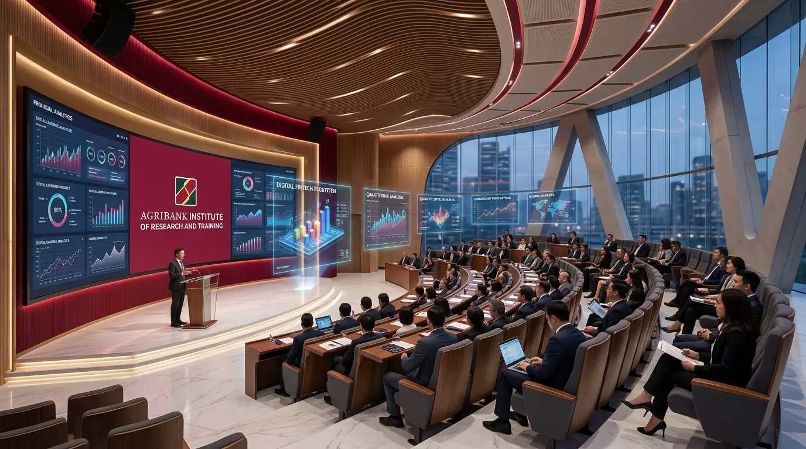

1 / 6
Không gian triển lãm lịch sử tương tác: Vinh danh những nền móng vững chắc được dựng xây bằng tâm huyết của bao thế hệ lãnh đạo, thầy cô và cán bộ Agribank từ năm 1999 đến nay.
Quyết định lịch sử đặt nền móng đầu tiên cho công tác đào tạo và bồi dưỡng chuyên môn nghiệp vụ trong toàn hệ thống Agribank.
Mở rộng quy mô, nâng cấp cơ sở vật chất khang trang, phát triển mạng lưới giảng viên kiêm chức và chuẩn hóa toàn diện khung chương trình đào tạo.
Tái cơ cấu bộ máy, đổi mới toàn diện mô hình tổ chức và phương thức quản trị đào tạo, nâng cao năng suất chuyên môn và vươn tầm giải thưởng quốc tế.
Bước ngoặt lịch sử: Vừa là trung tâm đào tạo chuẩn mực, vừa là viện nghiên cứu chiến lược, tham mưu chính sách đột phá trong kỷ nguyên số.
Trân trọng tri ân và khắc ghi công lao to lớn của các thế hệ Thầy Cô trong Ban Lãnh đạo Trường đã đặt nền móng vững chắc,
dẫn dắt và cống hiến trọn vẹn cho sự nghiệp đào tạo nguồn nhân lực Agribank từ năm 1999 đến nay.
Tóm tắt quá trình hình thành, phát triển từ những ngày đầu gian khó; khắc họa chân dung và gửi lời tri ân sâu sắc đến các đồng chí nguyên Lãnh đạo Agribank, nguyên Lãnh đạo Trường đã đặt nền móng cho công tác đào tạo.
Tôn vinh thành tựu nổi bật, khẳng định chất lượng và vị thế vững chắc của đơn vị trong công tác chuyên môn, tạo dựng niềm tin và uy tín trên toàn hệ thống.
Bản đồ cột mốc lịch sử và những khoảnh khắc vàng trắng đen/sepia của các thế hệ cán bộ, giảng viên, học viên thời kỳ đầu.
Câu chuyện về trách nhiệm xã hội, mang tri thức và yêu thương đến với đồng bào vùng cao, vùng sâu vùng xa. Nơi những người thầy Agribank không quản ngại đường xa gieo mầm con chữ và ánh sáng tài chính, tô đậm nét đẹp nhân văn và văn hóa nghĩa tình của mái nhà Agribank.
Chuyển mình mạnh mẽ từ mô hình trường truyền thống sang Viện Nghiên cứu và Đào tạo: Xây dựng hệ sinh thái học tập số, nghiên cứu chiến lược và bồi dưỡng nhân tài trong kỷ nguyên số.
Khoảnh khắc trang trọng đánh dấu bước chuyển mình lịch sử: Kế thừa trọn vẹn 25 năm truyền thống vẻ vang của Trường Đào tạo cán bộ, chính thức nâng tầm thành Viện nghiên cứu chiến lược và đào tạo đỉnh cao, phụng sự sự nghiệp phát triển bền vững của Agribank trong kỷ nguyên số.
Trân trọng ghi nhận và tôn vinh các Ban chuyên môn Trụ sở chính và Chi nhánh dẫn đầu trong phong trào số hóa bài giảng, xây dựng ngân hàng câu hỏi khảo thí trực tuyến toàn hệ thống.
Đại sảnh danh vọng (Hall of Fame): Tôn vinh những nhân tố đang nối dài truyền thống và dựng xây tương lai — từ người thầy trên bục giảng đến những đóng góp thầm lặng nơi hậu phương.
Tôn vinh Ban Lãnh đạo Agribank trực tiếp đứng lớp và đội ngũ Giảng viên kiêm chức xuất sắc giai đoạn 2022-2026 tận tâm truyền lửa nghề.
Biểu dương các Chi nhánh, Ban chuyên môn dẫn đầu phong trào đào tạo, tự học hỏi nâng cao tay nghề và phát triển văn hóa học tập suốt đời.
Tri ân các Viện nghiên cứu, Trường Đại học kinh tế uy tín trong nước và quốc tế đã đồng hành nâng tầm học thuật và chuẩn hóa năng lực.

Hậu Phương Vững ChắcTrân trọng biết ơn cán bộ quản lý lớp, kỹ thuật vận hành E-learning, phòng thu bài giảng, tổ truyền thông và đội ngũ hậu cần luôn tận tụy.
Tôn vinh các đơn vị bảo đảm giảng đường hiện đại, buồng phòng tiện nghi, ẩm thực chu đáo phục vụ hàng vạn lượt học viên mỗi năm.
Không gian lưu giữ ký ức: Nơi lắng đọng tình cảm của những con người đã và đang gắn bó trọn vẹn thanh xuân cùng mái trường Viện.
Chân dung rạng rỡ của toàn thể cán bộ, nhân viên, giảng viên đang miệt mài cống hiến tại các phòng ban của Viện Nghiên cứu và Đào tạo.
Những ký ức mộc mạc, những kỷ niệm gắn bó máu thịt với nghề và với mái trường qua từng bài giảng, từng chuyến công tác khắp mọi miền đất nước.
Hồi ức kỷ niệm quý giá và những tâm huyết gắn bó trọn vẹn dành cho thế hệ cán bộ trẻ của Viện Nghiên cứu và Đào tạo tiếp tục giữ vững tâm sáng và tinh thần học hỏi.
Những lát cắt thời gian quý báu ghi lại bước chân của bao thế hệ thầy trò dưới mái trường Viện. Nhấn vào từng bức ảnh để chiêm ngưỡng trọn vẹn ở chế độ toàn màn hình.
Chùm ảnh ghi lại những nụ cười rạng rỡ, nhiệt huyết tuổi trẻ của các thế hệ học viên, giảng viên qua các phong trào văn nghệ, hội thao và những giờ học gắn kết nghĩa tình.
Cuốn kỷ yếu khép lại trang sử 25 năm vàng son của Trường Đào tạo cán bộ, đồng thời mở ra kỷ nguyên mới rực rỡ dưới bầu trời tri thức của Viện Nghiên cứu và Đào tạo Agribank.
Xin trân trọng cảm ơn Đảng ủy, Ban Lãnh đạo Agribank, các đồng chí nguyên Lãnh đạo qua các thời kỳ, các thế hệ thầy cô giáo, tác giả các bài viết và toàn thể cán bộ nhân viên đã chung tay hoàn thành cuốn kỷ yếu điện tử đầy ý nghĩa này.